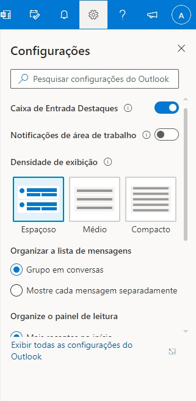
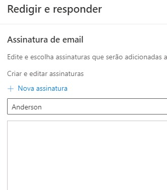
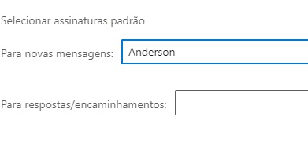

Passo 1

-
Clique no Icone da engrenagem
-
Clique em "Exibir todas as configurações do Outlook"
-
Clique em Redigir e Responder
Passo 2

-
Embaixo de nova assinatura adicione seu nome
-
Cole a sua assinatura nesse espaço em branco
-
Clique em nova assinatura
Passo 3

-
No campo para novas mensagens selecione o nome da sua assinatura
-
No campo para respostas/encaminhamentos, selecione o nome da sua assinatura
-
Clique em salvar e aproveite sua assinatura